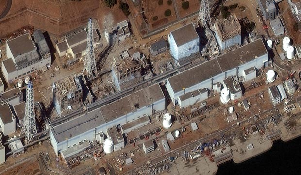

Japão admite que acidente nuclear de Fukushima foi causado pelo homem
Conclusão está em relatório de comissão que investigou a tragédia. Acidente de Fukushima ocorreu após forte terremoto em março de 2011.
Da France Presse

O acidente nuclear de Fukushima foi "um desastre provocado pelo homem" e não apenas uma consequência do terremoto e tsunami de 11 de março de 2011 no nordeste do Japão, concluiu uma comissão parlamentar que investigou a tragédia. "Fica claro que este acidente foi um desastre provocado pelo homem. Os governos anteriores e o da época, as autoridades reguladoras e a Tokyo Electric Power (Tepco) falharam no dever de proteger a população e a sociedade", afirma a comissão no relatório final.
Segundo o resultado da investigação oficial, "o acidente foi o resultado de uma cumplicidade entre o governo, as agências de regulamentação e a operadora Tepco, além de uma falta de comando das mesmas instâncias". "Traíram o direito da nação de ser protegida de acidentes nucleares. Por isto chegamos à conclusão de que o acidente foi claramente causado pelo homem", afirma o documento de 641 páginas.
"Pensamos que as causas fundamentais foram os sistemas de organização e regulamentação que se basearam em lógicas equivocadas, suas decisões e ações, e não um problema de competência de um indivíduo em particular".
O acidente de Fukushima, o mais grave desde a catástrofe de Chernobyl (Ucrânia) em 1986, aconteceu após um terremoto de magnitude 9 na região de Tohoku (nordeste), que desencadeou um tsunami em todo o litoral.
Uma onda de quase 15 metros de altura arrasou as instalações da central nuclear Fukushima Daiichi, afetando os sistemas de resfriamento dos reatores e geradores de emergência situados no subsolo.
"Pensamos que em 11 de março, a central era vulnerável aos terremotos e tsunamis", destaca a comissão.
A operadora da central, Tepco, sempre afirmou que o acidente havia sido consequência de um tsunami de dimensões imprevisíveis. "Isto se assemelha a uma desculpa para evitar responsabilidades", responde no relatório a comissão, que também ressalta que a "Tepco e as autoridades de regulamentação estavam a par dos riscos de tsunami e de terremoto".
"Apesar das várias oportunidades para adotar medidas, as agências de regulação e a direção da Tepco deliberadamente não fizeram nada, adiaram as decisões ou tomaram as medidas que lhes eram convenientes. Nenhuma medida de segurança foi adotada no momento do acidente", afirma o relatório.
A comissão estava integrada por 10 membros da sociedade civil (sismólogos, advogados, médicos, jornalistas e acadêmicos) designados pelos parlamentares. Presidida pelo professor Kyoshi Kurokawa, a comissão interrogou os principais personagens da época e iniciou as investigações em dezembro de 2011.
O primeiro-ministro no momento da tragédia, Naoto Kan, admitiu em uma audiência da comissão, em maio, a responsabilidade do Estado na catástrofe, mas defendeu a administração geral da crise, apesar de alguns erros.
 eai@hotmail.com
eai@hotmail.com  @eai?
@eai?